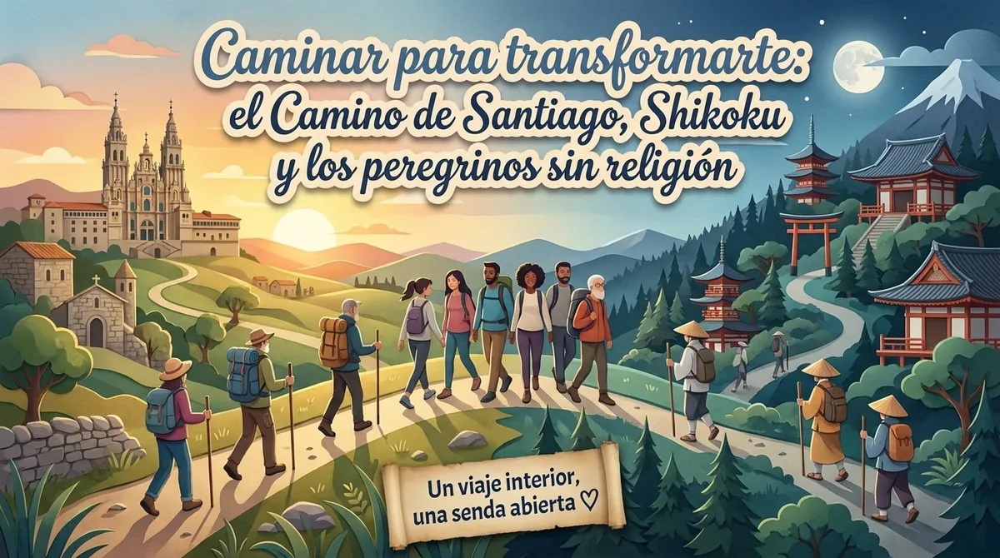
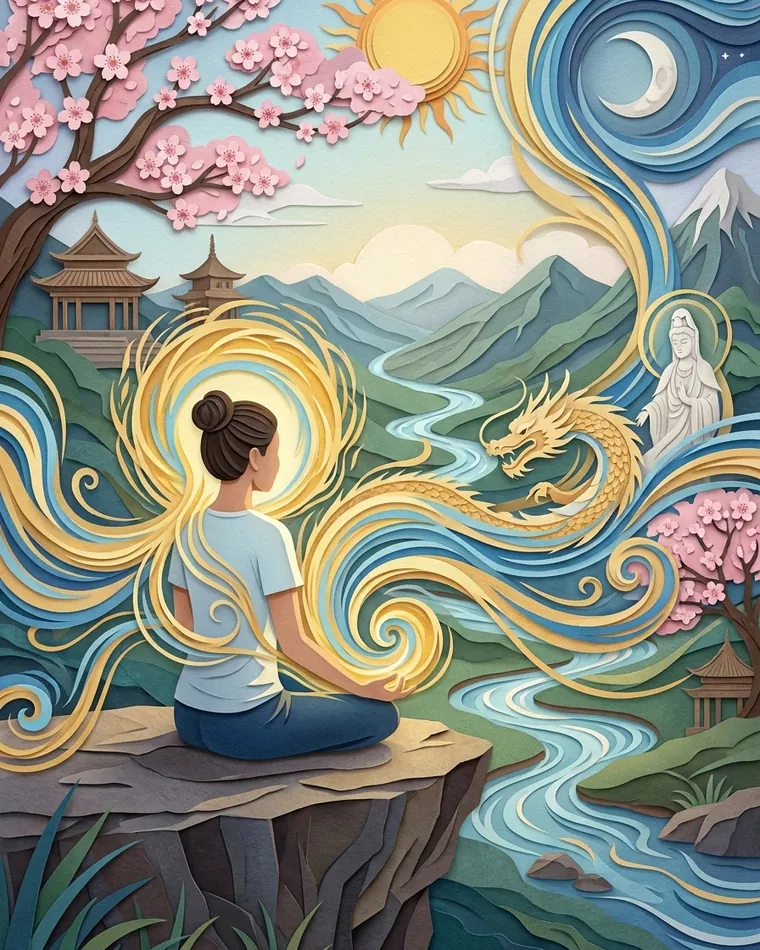
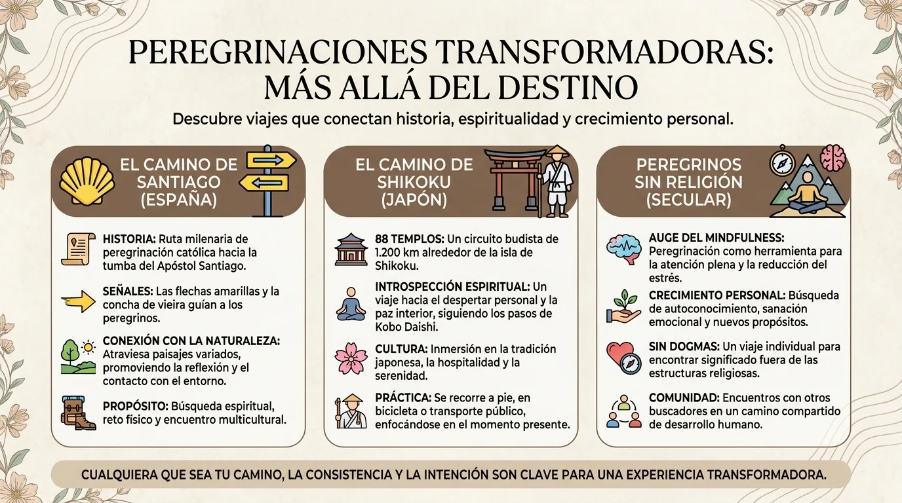
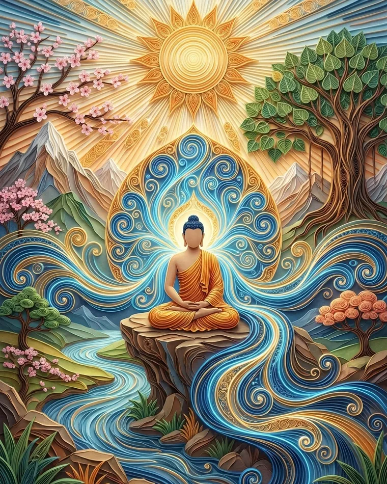

Caminar para transformarte: el Camino de Santiago, Shikoku y la experiencia espiritual sin religión

El Camino de Santiago como experiencia espiritual, sin ser creyente. Del Camino a los 88 templos de Shikoku: la peregrinación como búsqueda personal.
¿Por qué seguir caminando cuando nadie te obliga a ir tan despacio?
Nuestra época tiene una obsesión bastante clara: llegar antes. Un trayecto de diez horas pasa a ser de ocho, una respuesta que tardaba una semana se vuelve instantánea, la comida puede llegarte a casa antes incluso de que hayas decidido de verdad qué te apetece comer y, sin embargo, miles de personas eligen tomarse varios días o varias semanas para recorrer a pie una distancia que un vehículo cubriría en pocas horas.
A primera vista, la peregrinación a pie parece, por tanto, una anomalía logística.
¿Para qué caminar?
Precisamente porque la meta no es solo llegar.
En el Camino de Santiago, las rutas históricas confluyen en Santiago de Compostela, donde se encuentra el sepulcro que la tradición atribuye al apóstol Santiago el Mayor; la UNESCO recuerda que Compostela se convirtió ya en la Edad Media en uno de los grandes centros de peregrinación del mundo cristiano, y que el Camino Francés por sí solo se extiende a lo largo de unos 738 kilómetros a través de la península ibérica. (UNESCO World Heritage Centre)
En Japón, el Shikoku Henro une, por su parte, 88 templos vinculados a la figura de Kūkai, o Kōbō Daishi, fundador del budismo Shingon japonés; según la ruta elegida, el circuito completo a pie suma entre 1200 y 1450 kilómetros aproximadamente y suele requerir varias semanas. (ツーリズム四国)
Dos tradiciones muy distintas.
Dos historias religiosas muy distintas.
Y, aun así, una experiencia corporal sorprendentemente parecida:
- te levantas;
- caminas;
- comes;
- buscas dónde dormir;
- y vuelta a empezar.
La vida, que ayer tenía cuarenta y siete prioridades, de pronto tiene cuatro.
Quizá esa sea la primera transformación de la peregrinación: la reducción radical de la complejidad cotidiana.
La peregrinación transforma el tiempo porque el cuerpo por fin impone su propio ritmo

Cuando viajas en coche o en avión, el espacio casi desaparece entre la salida y la llegada. Sales de una ciudad, te encierras en una máquina y reapareces varios cientos de kilómetros más allá.
A pie, nada desaparece.
Cada kilómetro existe.
Un valle te lleva dos horas.
Una subida tiene una duración.
La lluvia ya no es un pequeño icono en la app del tiempo, sino algo que se te va metiendo poco a poco en los zapatos.
Esta lentitud genera una experiencia del tiempo muy diferente, especialmente interesante para la meditación, la introspección y las etapas de transición personal.
Al cabo de varios días, el movimiento se vuelve repetitivo:
- paso;
- respiración;
- paisaje;
- paso.
Puedes pasarte una hora pensando en una decisión importante.
Luego dejar de pensar en ella.
Y al día siguiente la pregunta vuelve.
Caminar te da así algo que nuestras vidas modernas rara vez conceden: tiempo mental sin estructura lo bastante largo como para que un pensamiento vaya más allá de su primera capa.
Quizá empieces el Camino preguntándote:
«¿Debería dejar mi trabajo?»
A los tres días:
«¿Por qué quiero irme?»
A los siete:
«¿Qué intento cambiar de verdad?»
A los diez:
«Puede que mi problema no sea solo mi trabajo.»
Por supuesto, la peregrinación no tiene ningún poder automático de revelación.
Puedes caminar ochocientos kilómetros y volver exactamente con las mismas ideas.
Pero la repetición, el esfuerzo y la reducción de distracciones crean un contexto excepcional para que una pregunta deje de ser algo puramente intelectual.
La cargas físicamente durante varios días.
El Camino de Santiago sin ser cristiano: cuando la peregrinación religiosa se convierte también en una búsqueda personal
El Camino sigue siendo, histórica y simbólicamente, una peregrinación cristiana, y borrar esa dimensión para presentarlo como una simple caminata de desarrollo personal sería un disparate histórico; las rutas, iglesias, hospitales de peregrinos, cruceros, tradiciones y el destino final están directamente ligados a esa historia religiosa. (UNESCO World Heritage Centre)
Pero las motivaciones actuales de los caminantes son mucho más diversas.
Te encuentras con personas que caminan:
- por fe;
- para marcar una transición;
- después de una separación;
- después de un duelo;
- al jubilarse;
- para superar un reto;
- para reflexionar;
- o simplemente porque sienten la necesidad de irse una temporada.
Eso es justo lo que hace interesante el concepto de peregrinación sin religión.
Tal vez una peregrinación no se defina únicamente por aquello en lo que crees.
También puede definirse por la manera en que te desplazas.
Dejas por voluntad propia un entorno conocido.
Aceptas una limitación.
Atraviesas varias etapas.
Dependes más del mundo exterior.
Llegas a un lugar que tiene un significado.
Y luego regresas.
Esta estructura es muy distinta de la de un fin de semana turístico.
El peregrino no se pregunta solo:
«¿Qué voy a ver?»
sino, a menudo:
«¿En qué estado voy a llegar?»
Es un matiz enorme.
Puedes fotografiar la catedral de Santiago nada más bajarte de un taxi.
O contemplarla después de treinta días de camino.
Arquitectónicamente, es el mismo edificio.
Psicológicamente, probablemente no sea el mismo lugar.

Shikoku: 88 templos y la extraña sensación de no caminar nunca del todo solo

La peregrinación de Shikoku tiene su propia lógica y no conviene en absoluto convertirla en un «Camino de Santiago japonés». Está profundamente ligada a Kūkai, figura clave del budismo japonés, y a una red de 88 templos cuya forma actual se fue configurando poco a poco a lo largo de la historia; los documentos mencionan la peregrinación desde la Edad Media, mientras que el circuito concreto de los 88 templos parece haberse estructurado sobre todo entre finales del siglo XVI y el siglo XVII. (ツーリズム四国)
Una fórmula tradicional especialmente bella acompaña al peregrino:
dōgyō ninin, «los dos viajamos juntos».
El segundo compañero es Kōbō Daishi.
Así, aunque el peregrino camine físicamente solo, la tradición le recuerda de forma simbólica que nunca lo está del todo; el primer templo, Ryōzenji, se sigue presentando hoy como el punto de partida habitual para quienes siguen el orden clásico de los 88 templos. (ツーリズム四国)
El circuito es, además, notablemente repetitivo.
Entrar en un templo.
Purificarse.
Rezar o recitar según la propia práctica.
Recibir, si acaso, un sello.
Volver a salir.
Y vuelta a empezar.
Lo que podría parecer monótono es precisamente uno de los mecanismos de la peregrinación.
Cuando la estructura exterior se vuelve predecible, las variaciones interiores se hacen más visibles.
Hoy:
impaciencia.
Mañana:
cansancio.
Pasado mañana:
asombro.
Luego aburrimiento.
Luego gratitud.
La peregrinación no es una sucesión constante de revelaciones espirituales bañadas en luz dorada.
Buena parte consiste, probablemente, en que te duelan los pies.
Y quizá sea mejor así.
Una espiritualidad que solo funciona cuando estás perfectamente cómodo correría el riesgo de durar bastante poco.
Por qué caminar puede cambiar algo incluso sin creer en una transformación mística
Caminar tiene varias características especialmente interesantes para el bienestar mental: actividad física moderada, exposición a entornos naturales o variados, posible reducción del tiempo de pantalla, ritmo repetitivo y la posibilidad de reflexionar sin interrupciones.
Pero hay que evitar la fórmula mágica:
«Camina treinta días y volverás transformado.»
Algunas personas vuelven profundamente cambiadas.
Otras, sobre todo muy morenas y con una colección impresionante de ampollas.
La transformación depende también de lo que hagas con la experiencia.
Una peregrinación puede funcionar como un rito de paso voluntario.
Antes:
una situación antigua.
Durante:
un espacio intermedio en el que las rutinas quedan en suspenso.
Después:
la reincorporación a la vida cotidiana.
Esta estructura explica por qué las peregrinaciones atraen especialmente en momentos de:
- duelo;
- separación;
- cambio de profesión;
- jubilación;
- mudanza a otro país;
- crisis existencial.
Cuando el mundo de antes ya no encaja del todo y el nuevo aún no está definido, caminar ofrece una actividad lo bastante concreta como para sostener ese periodo de incertidumbre.
Quizá no sepas qué vas a hacer con tu vida.
Pero hoy sí sabes qué hacer:
llegar hasta el próximo pueblo.
A veces, eso basta y sobra.
La micro-peregrinación: crear un día de caminata que no sea un simple paseo por el monte
Evidentemente, no necesitas cuarenta días libres para aprovechar algunos principios de la peregrinación.
Elige un destino que tenga un significado para ti:
- una ermita;
- un monumento;
- un bosque;
- la tumba de un ser querido;
- la orilla del mar;
- una cima;
- un lugar ligado a tu infancia.
Sal a pie desde lo bastante lejos como para que llegar te exija un esfuerzo real.
Antes de salir, escribe una sola pregunta.
Por ejemplo:
«¿Qué quiero dejar atrás?»
Durante la primera mitad del camino, no busques la respuesta.
Simplemente camina.
Durante la segunda, deja que la pregunta vuelva si es que vuelve.
Al llegar, quédate diez minutos sin móvil y escribe tres frases:
Lo que pensaba al salir.
Lo que entendí mientras caminaba.
Lo que voy a hacer al volver.
Esa es tu micro-peregrinación.
No hace falta pretender reproducir el Camino de Santiago ni Shikoku.
Simplemente aprovechas su intuición fundamental:
algunas respuestas necesitan distancia física antes de volverse claras.
En el fondo, la peregrinación nos recuerda que hay una diferencia entre saber intelectualmente que la vida avanza y sentir ese avance en tu propio cuerpo.
Durante varios días, el mundo se reduce a unos pocos metros de camino frente a ti.
No necesitas conocer todo el recorrido.
Solo el siguiente paso.
¿Tópico?
Sí.
Pero después de mil kilómetros, algunos tópicos se ganan el derecho a ser tomados en serio.
Preguntas frecuentes
¿Se puede hacer el Camino de Santiago sin ser creyente?
Sí. El Camino sigue siendo históricamente una peregrinación cristiana, pero muchos caminantes actuales tienen también motivaciones culturales, personales o introspectivas; respetar la historia religiosa del camino sigue siendo esencial.
¿Cuántos kilómetros tiene la peregrinación de Shikoku?
El circuito de los 88 templos suma unos 1200 kilómetros según la ruta a pie que presenta el organismo oficial de turismo de Shikoku, y algunas estimaciones detalladas superan los 1400 kilómetros según las variantes. (ツーリズム四国)
¿Por qué caminar ayuda a pensar?
Puede reducir las distracciones, aporta una actividad repetitiva y deja largos periodos de pensamiento sin estructura, además de los beneficios generales de la actividad física y del contacto con el entorno.
¿Hace falta irse varias semanas para vivir una peregrinación?
No. Un día de caminata voluntaria hacia un lugar significativo ya puede reunir los elementos esenciales: intención, desplazamiento, esfuerzo, llegada y regreso.
Practica con la app
¿Prefieres practicar antes que leer?
Todo lo que describe este artículo se practica en MeditaDream, una app de meditación gratis: 129 meditaciones guiadas y 17 mundos inmersivos en español, sin suscripción, sin anuncios, sin cuenta y sin conexión.
✦ Descubre la app gratis